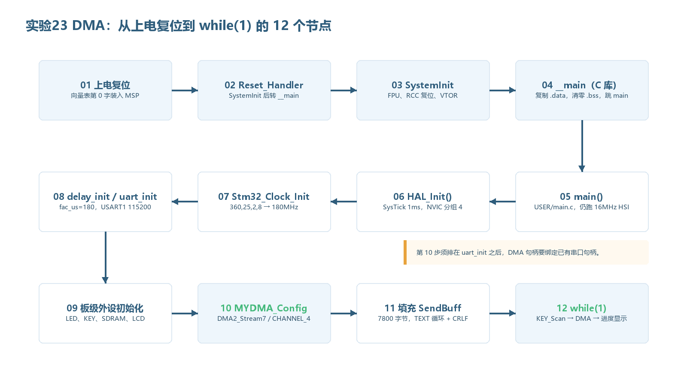
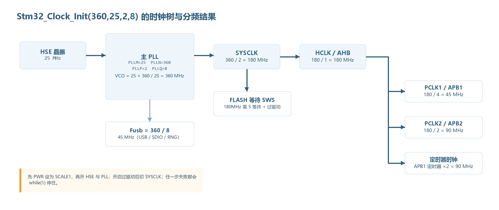
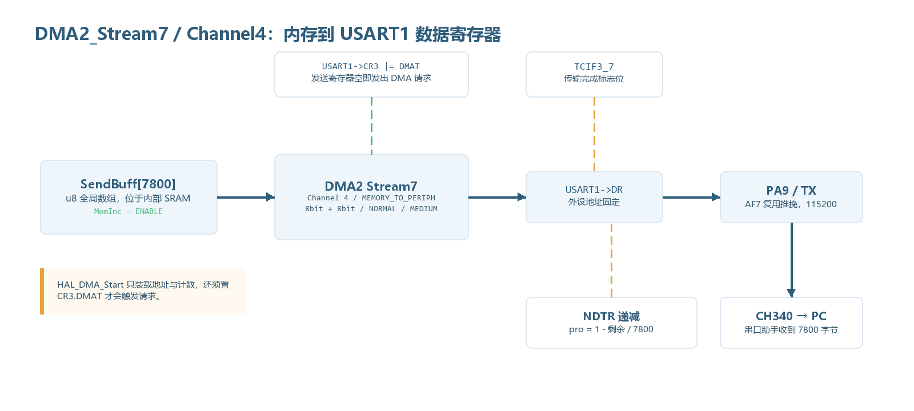
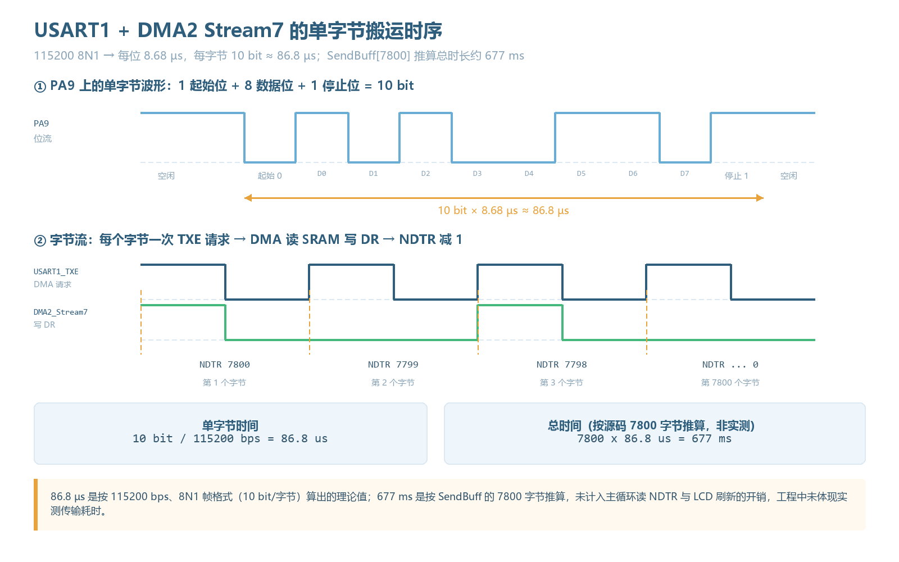
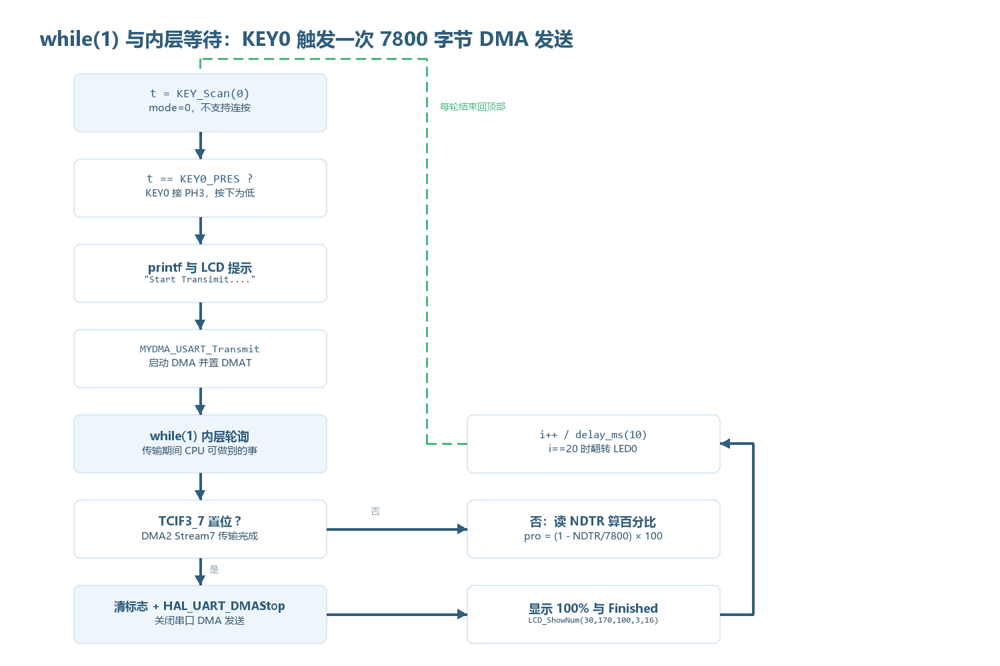

01 实验目标与硬件资源
实验23 沿用实验22 的板级初始化，只把“发数据”这件事交给 DMA：CPU 不再逐字节写 USART1->DR，而是配置好 DMA2 的 Stream7 / Channel4，由 DMA 控制器在每个发送寄存器空时自动搬运一个字节。主循环里唯一要做的就是查传输完成标志、顺便把进度百分比刷到屏上。
| 功能 | 引脚 / 外设 | 工程中的初始化 |
|---|---|---|
| 串口发送 | PA9，复用 AF7 | HAL_UART_MspInit() |
| 串口接收 | PA10，复用 AF7 | HAL_UART_MspInit() |
| DMA 数据流 | DMA2_Stream7 / Channel4 | MYDMA_Config() |
| KEY0 | PH3，输入上拉 | KEY_Init() |
| LED0 | PB1，推挽输出 | LED_Init() |
| 显示 | LCD（LTDC + 外部 SDRAM） | SDRAM_Init() + LCD_Init() |
02 目录与文件分工
| 文件 | 职责 | 本实验关注点 |
|---|---|---|
USER/main.c | 初始化顺序与主循环 | 10 条初始化调用、缓冲区填充、进度计算 |
USER/stm32f4xx_it.c | 异常与中断入口 | SysTick_Handler()、HardFault_Handler() |
USER/system_stm32f4xx.c | 复位后的最小配置 | FPU、RCC 复位、VTOR 重定位 |
CORE/startup_stm32f429xx.s | 向量表、栈堆、复位入口 | Stack 0x400、Heap 0x200、Reset_Handler |
SYSTEM/sys/sys.c | 时钟初始化 | Stm32_Clock_Init() 的 PLL 与 Flash 等待 |
SYSTEM/delay/delay.c | 微秒/毫秒延时 | fac_us 与 SysTick 轮询 |
SYSTEM/usart/usart.c | 串口与 printf | fputc() 重定向、PA9/PA10 配置 |
HARDWARE/dma/dma.c | 本实验核心 | DMA 句柄配置与启动函数 |
HARDWARE/led|key|sdram|lcd | 板级外设 | 现象呈现：灯、按键、屏幕 |
工程采用“外设驱动 + HAL 库”两层结构：USER 只写业务，HARDWARE 提供板级驱动，SYSTEM 提供与芯片无关的通用能力（时钟、延时、串口），CORE 与 HALLIB 由芯片厂商提供，本次不修改。
03 启动流程总览

把 main() 里的调用按“先底层后上层”排一下就能看出规律：先让芯片跑起来（时钟、时基、串口），再让板子亮起来（LED、按键、SDRAM、LCD），最后才配置本实验的主角（DMA）。顺序一旦颠倒，最典型的后果是 LCD 还没有时钟就调用 LCD_ShowString()，屏幕全白或花屏。
- 复位后第一条指令不是
main，而是启动文件里的Reset_Handler，它先调SystemInit，再跳 C 库的__main。 HAL_Init()建立 1ms 的 SysTick 时基，后面HAL_Delay()与 HAL 内部的超时判断都依赖它。Stm32_Clock_Init(360,25,2,8)把主频从 16MHz 的 HSI 切到 180MHz 的 PLL。delay_init(180)必须传 180，因为此时 HCLK 已经是 180MHz，延时系数按它算。MYDMA_Config()内部用__HAL_LINKDMA绑定UART1_Handler，所以必须排在uart_init()之后。
04 启动文件与向量表
Stack_Size EQU 0x400; // 栈 1KB，主栈 MSP 从这里向下生长 Heap_Size EQU 0x200; // 堆 512B，本工程几乎不用 malloc __Vectors DCD __initial_sp ; Top of Stack DCD Reset_Handler ; Reset Handler DCD NMI_Handler ; NMI Handler DCD HardFault_Handler ; Hard Fault Handler ... Reset_Handler PROC EXPORT Reset_Handler [WEAK] IMPORT SystemInit IMPORT __main LDR R0, =SystemInit BLX R0 // 先跑 SystemInit LDR R0, =__main BX R0 // 再进 C 库，最终调用 main ENDP
- 复位时内核强制从地址 0x00000000 取两个字：第 0 个字装入 MSP，第 1 个字装入 PC。所以向量表第 0 项必须是
__initial_sp，第 1 项必须是Reset_Handler。 - F429 的 Flash 起始地址是 0x08000000，通过
SYSCLK的映射，0x00000000 会别名到 Flash，因此上电时读到的就是本工程的向量表。 Reset_Handler用LDR + BLX而不是B，因为目标是另一个编译单元里的函数指针，需要先取地址再跳转，且要保留返回能力。- 栈只有 0x400 字节：本实验的局部变量只有几个
u16/u8/float，但LCD_ShowString内部调用较深，若改成大数组局部变量要留意溢出。
05 SystemInit 与 HAL_Init
void SystemInit(void)
{
#if (__FPU_PRESENT == 1) && (__FPU_USED == 1)
SCB->CPACR |= ((3UL << 10*2)|(3UL << 11*2)); /* set CP10 and CP11 Full Access */
#endif
RCC->CR |= (uint32_t)0x00000001; // 先开内部 HSI，保证有饭吃
RCC->CFGR = 0x00000000; // 清空分频配置
RCC->CR &= (uint32_t)0xFEF6FFFF; // 关 HSEON / CSSON / PLLON
RCC->PLLCFGR = 0x24003010; // PLL 参数恢复复位值
RCC->CR &= (uint32_t)0xFFFBFFFF; // 清 HSEBYP
RCC->CIR = 0x00000000; // 关闭所有 RCC 中断
SCB->VTOR = FLASH_BASE | VECT_TAB_OFFSET; // 向量表定位到 Flash 起始
}
紧接着的 HAL_Init() 做三件事：调用 HAL_NVIC_SetPriorityGrouping(NVIC_PRIORITYGROUP_4) 把优先级分成 4 位抢占、0 位子优先级；调用 HAL_InitTick(TICK_INT_PRIORITY) 把 SysTick 配成 1ms 中断；使能 Flash 预取与指令/数据缓存。
SystemInit不配置 PLL，只把 RCC 恢复到复位状态。真正切到 180MHz 的是后面Stm32_Clock_Init()。SCB->CPACR那两行打开 CP10/CP11，即 FPU 全访问；本实验用到float pro，若不开 FPU，浮点指令会进 HardFault。VTOR只在需要把中断向量搬到 SRAM 或做 IAP 时才改；本工程保持 0x08000000，所以stm32f4xx_it.c里的函数名必须与启动文件向量表一一对应。HAL_Init建立的 1ms 节拍同时服务于HAL_Delay和HAL_UART_Transmit的 1000ms 超时参数。
06 时钟、延时与串口

void Stm32_Clock_Init(u32 plln,u32 pllm,u32 pllp,u32 pllq)
{
__HAL_RCC_PWR_CLK_ENABLE(); // 使能PWR时钟
__HAL_PWR_VOLTAGESCALING_CONFIG(PWR_REGULATOR_VOLTAGE_SCALE1); // 调压器级别1
RCC_OscInitStructure.OscillatorType=RCC_OSCILLATORTYPE_HSE; // 时钟源为HSE
RCC_OscInitStructure.HSEState=RCC_HSE_ON; // 打开HSE
RCC_OscInitStructure.PLL.PLLState=RCC_PLL_ON; // 打开PLL
RCC_OscInitStructure.PLL.PLLSource=RCC_PLLSOURCE_HSE; // PLL源选HSE
RCC_OscInitStructure.PLL.PLLM=pllm; // 25
RCC_OscInitStructure.PLL.PLLN=plln; // 360
RCC_OscInitStructure.PLL.PLLP=pllp; // 2
RCC_OscInitStructure.PLL.PLLQ=pllq; // 8
ret=HAL_RCC_OscConfig(&RCC_OscInitStructure);
if(ret!=HAL_OK) while(1);
ret=HAL_PWREx_EnableOverDrive(); // 180MHz 必须开过驱动
if(ret!=HAL_OK) while(1);
RCC_ClkInitStructure.SYSCLKSource=RCC_SYSCLKSOURCE_PLLCLK; // 系统时钟选PLL
RCC_ClkInitStructure.AHBCLKDivider=RCC_SYSCLK_DIV1; // HCLK=180MHz
RCC_ClkInitStructure.APB1CLKDivider=RCC_HCLK_DIV4; // PCLK1=45MHz
RCC_ClkInitStructure.APB2CLKDivider=RCC_HCLK_DIV2; // PCLK2=90MHz
ret=HAL_RCC_ClockConfig(&RCC_ClkInitStructure,FLASH_LATENCY_5); // 同时设 5WS
if(ret!=HAL_OK) while(1);
}
延时与 printf 分别由 delay.c 与 usart.c 提供，两者都与时钟强相关：
void delay_init(u8 SYSCLK)
{
HAL_SYSTICK_CLKSourceConfig(SYSTICK_CLKSOURCE_HCLK); // SysTick 时钟 = HCLK
fac_us=SYSCLK; // 180MHz 下 1us = 180 个节拍
}
void delay_us(u32 nus)
{
u32 ticks; u32 told,tnow,tcnt=0;
u32 reload=SysTick->LOAD;
ticks=nus*fac_us; // 需要的节拍数
told=SysTick->VAL;
while(1)
{
tnow=SysTick->VAL; // 轮询递减计数器
if(tnow!=told)
{
if(tnow<told)tcnt+=told-tnow;
else tcnt+=reload-tnow+told; // 处理回绕
told=tnow;
if(tcnt>=ticks)break;
}
}
}
int fputc(int ch, FILE *f)
{
while((USART1->SR&0X40)==0); // 等 TXE 置位
USART1->DR = (u8) ch; // printf 最终落到这里
return ch;
}
- VCO = HSE / PLLM × PLLN = 25 / 25 × 360 = 360MHz；SYSCLK = VCO / PLLP = 180MHz；Fusb = 360 / 8 = 45MHz。
- 180MHz 超出 168MHz 档，必须先
HAL_PWREx_EnableOverDrive()，且 Flash 至少 5 个等待周期，否则取指错乱。 delay_us是纯软件轮询，不依赖中断，因此在中断里也能用；代价是占用 CPU。delay_ms内部就是循环调用delay_us(1000)，所以 10ms 延时并不精确到单周期。fputc里用USART1->SR的 TXE 标志做阻塞判断，这就是未开 DMA 时“printf 会卡住 CPU”的原因。
07 DMA 原理与参数
DMA 控制器独立于内核，它监听外设的请求信号。USART1 发送寄存器一空，就向 DMA2 的 Channel4 发一次请求，DMA 从内存读一个字节写进 DR。整个过程 CPU 只需在开始前配置一次，结束后查一次标志。
void MYDMA_Config(DMA_Stream_TypeDef *DMA_Streamx,u32 chx)
{
if((u32)DMA_Streamx>(u32)DMA2) // 判断属于 DMA2 还是 DMA1
{
__HAL_RCC_DMA2_CLK_ENABLE(); // DMA2 时钟使能
}else
{
__HAL_RCC_DMA1_CLK_ENABLE();
}
__HAL_LINKDMA(&UART1_Handler,hdmatx,UART1TxDMA_Handler); // 句柄互相绑定
UART1TxDMA_Handler.Instance=DMA_Streamx; // DMA2_Stream7
UART1TxDMA_Handler.Init.Channel=chx; // DMA_CHANNEL_4
UART1TxDMA_Handler.Init.Direction=DMA_MEMORY_TO_PERIPH; // 内存 -> 外设
UART1TxDMA_Handler.Init.PeriphInc=DMA_PINC_DISABLE; // 外设地址不变
UART1TxDMA_Handler.Init.MemInc=DMA_MINC_ENABLE; // 内存地址递增
UART1TxDMA_Handler.Init.PeriphDataAlignment=DMA_PDATAALIGN_BYTE; // 外设 8 位
UART1TxDMA_Handler.Init.MemDataAlignment=DMA_MDATAALIGN_BYTE; // 内存 8 位
UART1TxDMA_Handler.Init.Mode=DMA_NORMAL; // 单次，不循环
UART1TxDMA_Handler.Init.Priority=DMA_PRIORITY_MEDIUM; // 中优先级
UART1TxDMA_Handler.Init.FIFOMode=DMA_FIFOMODE_DISABLE; // 不用 FIFO
UART1TxDMA_Handler.Init.FIFOThreshold=DMA_FIFO_THRESHOLD_FULL;
UART1TxDMA_Handler.Init.MemBurst=DMA_MBURST_SINGLE; // 单次突发
UART1TxDMA_Handler.Init.PeriphBurst=DMA_PBURST_SINGLE;
HAL_DMA_DeInit(&UART1TxDMA_Handler); // 先复位再初始化
HAL_DMA_Init(&UART1TxDMA_Handler);
}
- 方向必须是
MEMORY_TO_PERIPH：内存地址递增（MINC），外设地址固定（PINC关闭），因为 7800 个字节都写进同一个DR。 - 两侧数据宽度都是
BYTE。若设成半字，DMA 会一次搬 2 个字节到 8 位 DR，串口只会发出后一个字节的低 8 位。 DMA_NORMAL表示搬完NDTR个字节就停，需要下次重新装载；若要连续刷同一块缓冲区才用DMA_CIRCULAR。__HAL_LINKDMA把UART1_Handler.hdmatx指向 DMA 句柄，这样HAL_UART_DMAStop()才知道该关哪个流。- FIFO 关闭时数据宽度不一致会报错，所以两侧都统一成字节最省心。
08 GPIO 与串口配置
void uart_init(u32 bound)
{
UART1_Handler.Instance=USART1;
UART1_Handler.Init.BaudRate=bound; // 115200
UART1_Handler.Init.WordLength=UART_WORDLENGTH_8B; // 8 位数据
UART1_Handler.Init.StopBits=UART_STOPBITS_1; // 1 位停止
UART1_Handler.Init.Parity=UART_PARITY_NONE; // 无校验
UART1_Handler.Init.HwFlowCtl=UART_HWCONTROL_NONE; // 无硬件流控
UART1_Handler.Init.Mode=UART_MODE_TX_RX; // 收发
HAL_UART_Init(&UART1_Handler); // 内部会调 MspInit
}
void HAL_UART_MspInit(UART_HandleTypeDef *huart)
{
if(huart->Instance==USART1)
{
__HAL_RCC_GPIOA_CLK_ENABLE(); // GPIOA 时钟
__HAL_RCC_USART1_CLK_ENABLE(); // USART1 时钟
GPIO_Initure.Pin=GPIO_PIN_9; // PA9 = TX
GPIO_Initure.Mode=GPIO_MODE_AF_PP; // 复用推挽
GPIO_Initure.Pull=GPIO_PULLUP; // 上拉
GPIO_Initure.Speed=GPIO_SPEED_FAST;
GPIO_Initure.Alternate=GPIO_AF7_USART1; // AF7
HAL_GPIO_Init(GPIOA,&GPIO_Initure);
GPIO_Initure.Pin=GPIO_PIN_10; // PA10 = RX
HAL_GPIO_Init(GPIOA,&GPIO_Initure);
}
}
| 参数 | 取值 | 来源 |
|---|---|---|
| 波特率 | 115200 | uart_init(115200) |
| USART1 时钟 | PCLK2 = 90MHz | APB2 分频 2 |
| USARTDIV | 90M / (16 × 115200) ≈ 48.83 | HAL 内部按 UART_OVERSAMPLING_16 计算 |
| GPIO 复用 | AF7 | GPIO_AF7_USART1 |
HAL_UART_Init本身不碰 GPIO，它通过回调HAL_UART_MspInit完成“时钟 + 引脚 + 中断”的板级配置，这是 HAL 的分层约定。- PA9 设成
GPIO_MODE_AF_PP才能由 USART 外设接管输出；若误设成普通推挽，串口波形出不来。 - 引脚复用编号必须查数据手册：F429 的 USART1 在 PA9/PA10 上对应 AF7，写成 AF6 会连到别的外设。
- 本实验只用查询方式发数据（DMA + 轮询标志），
HAL_UART_Receive_IT被注释掉，因此不会产生接收中断。
09 发送缓冲区填充
#define SEND_BUF_SIZE 7800 // 发送长度，取 sizeof(TEXT)+2 的整数倍便于对齐 u8 SendBuff[SEND_BUF_SIZE]; // 全局数组，位于内部 SRAM const u8 TEXT_TO_SEND[]={"ALIENTEK Apollo STM32F4 DMA 串口实验"}; j=sizeof(TEXT_TO_SEND); for(i=0;i<SEND_BUF_SIZE;i++) // 填满整个缓冲区 { if(t>=j) // 正文写完，补回车换行 { if(mask) { SendBuff[i]=0x0a; // LF t=0; }else { SendBuff[i]=0x0d; // CR mask++; } }else // 逐个复制正文字符 { mask=0; SendBuff[i]=TEXT_TO_SEND[t]; t++; } }
sizeof(TEXT_TO_SEND)含字符串结尾的'\0'，所以循环会把这个0也当普通字节发出去，屏幕上表现为一个空字符。- 用
mask在 0/1 之间切换，实现“先 CR 后 LF”，与串口助手的“自动换行”配合才能正常分行。 - 缓冲区必须是全局或静态数组：DMA 在后台搬运，若放在
main的栈上，函数返回后栈被复用就会发出乱码。 - 7800 字节是
SEND_BUF_SIZE的编译期常量，DMA 传输长度直接取它，不会越界。
10 DMA 传输链路与标志位

void MYDMA_USART_Transmit(UART_HandleTypeDef *huart, uint8_t *pData, uint16_t Size)
{
HAL_DMA_Start(huart->hdmatx, (u32)pData, (uint32_t)&huart->Instance->DR, Size); // 装地址与计数
huart->Instance->CR3 |= USART_CR3_DMAT; // 使能串口 DMA 发送
}
HAL_DMA_Start() 内部会做四件事：关流、写 PAR（外设地址）、写 M0AR（内存地址）、写 NDTR（数量），最后置 EN。但此时 USART1 还没有被允许发 DMA 请求，必须再置 CR3.DMAT，数据才会真正流动。
把这条链路摊到时间轴上看，每个字节都重复同一套动作：DR 一空就置起 TXE，DMA 立刻从 SRAM 取出一个字节写进 DR，NDTR 随之减 1。

按 115200 8N1 计算，一位 8.68 µs、一个字节 10 bit 约 86.8 µs；7800 字节连发下去，整帧时长在 677 ms 量级（推算值），这也是屏上百分比不可能瞬间跳到 100% 的原因。
- 外设地址取
&Instance->DR，即数据寄存器；若误写成&Instance->SR，会不停把状态寄存器内容发出去。 NDTR是递减计数器，每搬一个字节减 1，减到 0 时硬件置TCIF并停止（NORMAL 模式）。- 进度百分比由
pro = 1 - NDTR / SEND_BUF_SIZE得到，所以刚启动时 NDTR = 7800，显示 0%。 TCIF3_7是“DMA2 Stream7 传输完成”标志，必须手动清零，否则下一次传输会立即误判为完成。
11 主循环与现象

while(1)
{
t=KEY_Scan(0);
if(t==KEY0_PRES) // KEY0 按下
{
printf("\r\nDMA DATA:\r\n");
LCD_ShowString(30,150,200,16,16,"Start Transimit....");
LCD_ShowString(30,170,200,16,16," %"); // 先画百分号
MYDMA_USART_Transmit(&UART1_Handler,(u8*)SendBuff,SEND_BUF_SIZE); // 启动传输
while(1) // 期间 CPU 可以做别的事
{
if(__HAL_DMA_GET_FLAG(&UART1TxDMA_Handler,DMA_FLAG_TCIF3_7)) // 传完了？
{
__HAL_DMA_CLEAR_FLAG(&UART1TxDMA_Handler,DMA_FLAG_TCIF3_7);
HAL_UART_DMAStop(&UART1_Handler); // 关串口 DMA
break;
}
pro=__HAL_DMA_GET_COUNTER(&UART1TxDMA_Handler); // 剩余字节数
pro=1-pro/SEND_BUF_SIZE; // 换算成比例
pro*=100; // 百分比
LCD_ShowNum(30,170,pro,3,16);
}
LCD_ShowNum(30,170,100,3,16); // 补一个 100%
LCD_ShowString(30,150,200,16,16,"Transimit Finished!");
}
i++;
delay_ms(10);
if(i==20) // 200ms 翻转一次
{
LED0=!LED0; // 提示系统正在运行
i=0;
}
}
- 内层
while(1)是“忙等”而非阻塞式 HAL 发送，每圈只读一次NDTR和一个标志位，CPU 仍有富余。 - 标志判断必须放在读
NDTR之前：传输刚完成时NDTR已经是 0，若顺序反了会先显示 100% 再退出，时序上看不出差别，但语义不对。 HAL_UART_DMAStop()会关闭 DMA 通道并清CR3.DMAT，避免下一次MYDMA_USART_Transmit之前串口继续发请求。i是u16且每 20 次归零，所以 LED0 以约 200ms 周期闪烁，与 DMA 传输是否进行无关。- KEY_Scan(0) 不支持连按：按住不放只会触发一次，避免连续启动 DMA 造成数据覆盖。
12 交互演示：进度与指示灯
MYDMA_USART_Transmit，每次轮询对应内层 while(1) 的一圈，进度到 100% 对应 TCIF3_7 置位后 break。13 操作与现象对照
| 操作 | 可观察现象 | 对应代码 |
|---|---|---|
| 上电复位 | LCD 白屏后显示 “Apollo STM32F4/F7 / DMA TEST / KEY0:Start” | LCD_Init 后的 5 条 LCD_ShowString |
| 不按任何键 | LED0 约 200ms 闪烁一次 | i==20 → LED0=!LED0 |
| 按下 KEY0 | 屏上显示 Start Transimit....，百分数从 0 递增到 100 | 内层 while(1) 读 NDTR |
| 按下 KEY0 后看串口助手 | 收到 7800 字节，正文与回车换行交替出现 | SendBuff 填充 + DMA 搬运 |
| 传输结束 | 屏上显示 Transimit Finished! | HAL_UART_DMAStop 后两条显示 |
| 再按一次 KEY0 | 重复上述过程，进度重新从 0 开始 | HAL_DMA_Start 重新装载 NDTR |
CR3.DMAT 是否置位，再看 DMA2_Stream7->NDTR 有没有变化。NDTR 不动说明请求没进来，通常是通道号选错或串口没使能。14 关键逻辑复盘与排查
链路一句话
KEY0（PH3）→ KEY_Scan 返回 KEY0_PRES → MYDMA_USART_Transmit 装载地址与 7800 → CR3.DMAT 置位 → DMA2 Stream7 随 TXE 搬字节 → NDTR 递减 → 归零置 TCIF3_7 → 主循环清标志并 DMAStop。
| 现象 | 优先怀疑 | 定位方法 |
|---|---|---|
| 串口一个字节都没有 | DMA 通道号错 / DMAT 未置位 | 看 DMA2_Stream7->NDTR 是否递减 |
| 只收到前几个字节 | 数据宽度设成了半字/字 | 检查 PDATAALIGN 与 MDATAALIGN |
| 收到乱码 | 缓冲区在栈上，或波特率不匹配 | 确认 SendBuff 为全局；示波器量 PA9 |
| 进度停在某个值不动 | DMA 被其他流抢占或发生传输错误 | 查 TEIF、DMEIF 标志 |
| 第二次按键无反应 | TCIF 未清或未 DMAStop | 单步看 __HAL_DMA_CLEAR_FLAG 是否执行 |
程序卡在 while(1) 不进主循环 | 时钟初始化失败 | 检查 HSE 是否起振，Stm32_Clock_Init 内三个 while(1) |
- 本实验没有使用 DMA 中断，全部靠标志位轮询；若改成中断方式，需要在
HAL_DMA_Init后调用HAL_NVIC_EnableIRQ(DMA2_Stream7_IRQn)并在 ISR 里处理XferCpltCallback。 HAL_UART_DMAStop与HAL_DMA_Abort不等价：前者同时清串口的 DMAT 位，后者只关流。- 传输期间不要改写
SendBuff，DMA 读到哪算哪，容易出现“前半段新数据、后半段旧数据”。
15 总结
第一，启动顺序有依赖：时钟 → 时基 → 串口 → 板级外设 → 本实验外设，任何一步提前都会引出难查的时序问题。第二，DMA 配置的四个要素是流、通道、方向与数据宽度，缺一不可，其中通道号由芯片的请求映射表固定。第三，HAL 的分层体现在 HAL_UART_Init 自动回调 HAL_UART_MspInit、__HAL_LINKDMA 把两个句柄绑在一起，理解这层关系后，HAL 库就不再是黑盒。